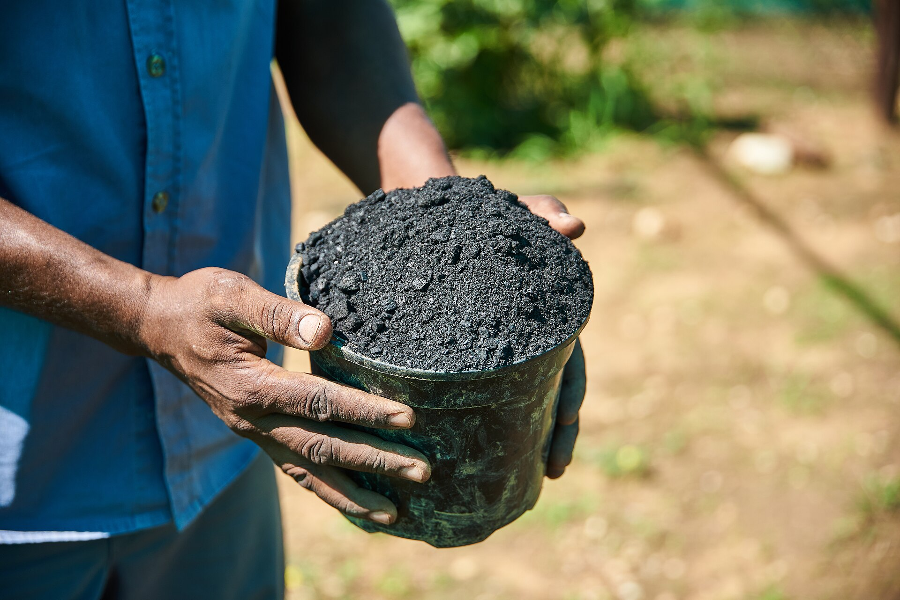

BioChar Checklist
Create black gold for your soil.
What is Biochar?
Biochar is a stable, carbon-rich form of charcoal produced through pyrolysis, a thermochemical decomposition process that occurs when organic biomass—such as wood chips, agricultural residues, or crop waste—is heated between 400°C and 700°C in a low-oxygen or oxygen-free environment. Unlike traditional charcoal used for fuel, biochar is specifically engineered for use as a soil amendment with remarkable longevity. Its highly porous structure, resembling a microscopic honeycomb, creates an ideal habitat for beneficial soil microorganisms while simultaneously improving the physical and chemical properties of soil across diverse climates and soil types.
Once incorporated into the soil, biochar acts as a permanent carbon reservoir, persisting for hundreds to thousands of years without degrading. This extraordinary stability makes it one of the most effective tools for long-term carbon sequestration. Beyond its climate benefits, biochar functions as a natural soil conditioner: its vast surface area—often exceeding 300 square meters per gram—traps and holds moisture, preventing water loss during dry periods. The porous matrix also serves as a nutrient reservoir, capturing dissolved minerals and fertilizers that would otherwise leach away, and releasing them gradually to plant roots on demand. This nutrient buffering capacity reduces the need for frequent fertilization and minimizes nutrient runoff into waterways.
Biochar also fosters a thriving microbial ecosystem in the root zone. The pore spaces provide protected microhabitats where beneficial bacteria, fungi, and mycorrhizae can colonize and flourish, shielded from predators and environmental stress. This enhanced biological activity leads to improved nutrient cycling, disease suppression, and overall soil resilience. When combined with compost or other organic amendments, biochar becomes a powerful tool for regenerating degraded soils and building long-term fertility in both home gardens and large-scale agricultural operations.
Why Use Biochar in Your Garden?
- Enhanced Water Retention — Biochar's porous structure acts like a sponge, absorbing and holding up to five times its weight in water, reducing irrigation frequency and protecting plants during drought.
- Nutrient Buffering — Cation exchange capacity increases significantly, allowing biochar to capture and store essential plant nutrients like potassium, calcium, and magnesium, then release them as needed.
- Carbon Sequestration — Each ton of biochar permanently locks away roughly 2.5 tons of CO₂ equivalent, actively combating climate change while simultaneously improving your soil.
Cardboard isn't blocking light completely — here is how to fix it:
- Gaps between sheets — Overlap cardboard edges by at least 6 inches and cover any gaps with extra layers of newspaper or straw.
- Cardboard too thin — Use double-layered corrugated cardboard for perennial weeds like bindweed or quackgrass. Single layer works fine for annual grasses.
- Not enough weight on top — Add a heavier compost layer (3–4 inches) to press the cardboard flat against the soil and block all light penetration.
A healthy lasagna bed should smell earthy, not foul:
- Too much nitrogen (greens) — Slimy, smelly layers mean too many grass clippings or manure. Add dry browns like straw, leaves, or shredded cardboard and mix them in.
- Poor aeration — Compacted layers suffocate microbes. Fluff the affected area with a garden fork to restore airflow.
- Too wet — Cover the bed with a tarp during heavy rain or add extra mulch on top to shed excess water.
Lasagna beds are moist and slug-friendly — manage them proactively:
- Mulch with abrasive materials — Sprinkle crushed eggshells, diatomaceous earth, or coarse sand around plant stems to deter slugs.
- Plant slug-resistant varieties — Herbs like rosemary, lavender, and thyme are naturally avoided by most slugs. Use them as border plants.
- Hand-pick at night — Go out after dark with a flashlight and collect slugs. Place shallow beer traps around the bed perimeter to catch stragglers.